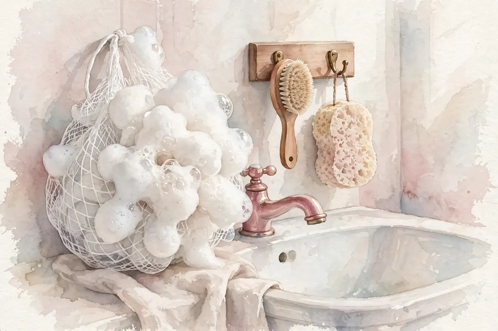

トップ ＞ スキンケア ＞ 泡立てネットなど道具の手入れと交換時期
泡立てネットなど道具の手入れと交換時期

泡立てネットや洗顔ブラシは、毎日肌に間接的に触れる道具です。道具の状態は、洗い上がりの感触にも影響します。施術の現場では、タオルやスポンジの管理は衛生の基本として徹底します。この記事では、家庭での道具の手入れと、交換の目安の考え方を整理します。
使ったあとは「洗って、干す」までがセット
泡立てネットは、使ったあとに残った泡を水でよくすすぎ、水気を絞って、風通しのよい場所に吊るすのが基本です。濡れたまま洗面台に置いておくと、乾くまでの時間が長くなり、においの原因にもなります。フックに掛ける場所を決めておくと、この流れが習慣になります。
洗顔ブラシやスポンジも考え方は同じで、使用後はよくすすいで乾かします。毛の根元やスポンジの内部は乾きにくいので、置き方を工夫してください。道具の手入れは、特別な洗剤より「すすぎと乾燥」が中心です。
交換の目安は「状態」で見る
交換時期は、期間の数字より、道具の状態で判断するのが実用的です。ネットの目が破れてきた、泡立ちが以前より悪くなった、乾かしてもにおいが残る、ブラシの毛先が広がって戻らない。こうした変化が、交換の合図です。
目安として、ネット類は数か月単位で状態を確認する習慣を持つと安心です。新しいものと並べて泡立ちを比べると、へたり具合がよく分かります。道具は消耗品です。良い状態の道具で洗うことが、毎日の洗顔の質を支えます。
共有しない、も基本のひとつ
顔に使う道具は、家族間でも共有しないのが基本です。それぞれの肌の状態が違いますし、衛生面でも分けて使うほうが安心です。色違いでそろえるなど、見分けのつく形にしておくと取り違えを防げます。
なお、道具が原因かどうか分からない肌の不調が続く場合は、道具の交換だけで判断せず、皮膚科などの専門家に相談してください。道具の見直しは、あくまで日常の衛生管理の一環です。
替えを1つ持つと、手入れが回りやすくなる
道具の管理を楽にする工夫として、泡立てネットなどの替えを1つ持っておく方法があります。洗って干している間にもう一方を使えるため、乾燥の時間を十分に取れます。ローテーションにすると、1つの道具にかかる負担も分散し、状態の変化にも気づきやすくなります。
新しい道具に替えるときは、泡立ちの違いを比べてみてください。同じ洗顔料でも、道具の状態で泡の質は変わります。その違いを知ることが、道具を「消耗品として管理する」感覚につながります。道具は安いものでも構いません。良い状態で使うことが大切なのです。
泡立てネットの使い方そのものも、泡の質に関係します。ネットを濡らし、洗顔料を付けて、手のひらで転がすように空気を含ませていきます。泡が育ってきたら、ネットを絞るようにして泡を集めます。道具の手入れが行き届いていると、この泡立てが安定します。
道具に頼らず、手のひらで泡立てる日があっても構いません。ただし、その場合は泡の量が少なくなりやすいので、洗い方の感触が変わります。道具を使う日と使わない日の違いを知ることも、道具の役割を理解することにつながります。
道具の置き場所も、手入れの一部です。洗面所の中でも、シャワーの水が直接かかる場所や、湿気のこもる隅は避けたいところです。使う場所の近くで、かつ乾きやすい場所。その条件を満たす定位置を、道具ごとに決めておいてください。
家族で洗面所を共有する場合は、道具の色分けが有効です。誰のものかが一目で分かれば、取り違えも、洗い忘れも減ります。色は、好みで選んで構いません。見分けがつくことが目的です。
道具は、ケアの主役ではありません。しかし、主役の働きを支える土台です。土台の手入れを怠らないことが、毎日の洗顔の安定につながります。
セラフィナ「道具も洗って干す。それが長持ちと清潔のコツだね」